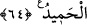

onlar (ehl-i kitap) bu işte seninle çekişmesinler. Sen, Rabbine davet et. Zira sen,
hakikaten dosdoğru bir yoldasın.
68. Eğer seninle münakaşa ve mücâdeleye girişirlerse: «Allah yaptığınızı çok iyi
bilmektedir» de.
69. Allah kıyâmet gününde, ihtilâf etmekte olduğunuz konulara dair aranızda
hüküm verecektir.
70. Bilmez misin ki, Allah, gökte ve yerde ne varsa bilir? Bu, bir kitapta (levh-i
mahfuzda) mevcuttur. Bu (eşya ve olayların bilgisine sahip olmak), Allah için çok
kolaydır.
71. Onlar, Allah’ı bırakıp, Allah’ın kendisine hiçbir delil indirmediği, kendilerinin
dahi hakkında bilgi sahibi olmadıkları şeylere tapıyorlar. Zalimlerin hiç yardımcısı
yoktur.
72. Âyetlerimiz açık açık kendilerine okunduğunda, kâfirlerin suratlarında
hoşnutsuzluk sezersin. Onlar, kendilerine âyetlerimizi okuyanların neredeyse
üzerlerine saldırırlar. De ki: Size bundan (bu öfke ve huzursuzluğunuzdan) daha
kötüsünü bildireyim mi? Cehennem! Allah, onu kâfirlere (ceza olarak) bildirdi. O,
ne kötü sondur!
“Görmedin mi, Allah, gökten yağmur indirdi de bu sâyede yeryüzü yeşeriyor.”
Solgunluk ve kuruluğun ardından birdenbire yeşeriyor.
Râğıb der ki: “
(yeşil)” beyazla siyah arasında bir renktir. Siyaha daha yakındır.
Onun için siyaha yeşil, yeşile de siyah denmiştir. Irak’ta yeşilin çok olduğu yere “
” denilmiştir.
“Görmedin mi?” ifâdesi, takrir/tesbît için olan bir sorudur. “
” fiilinin muzâri
siygasıyla getirilmesi, yağmurun tesirinin uzun zaman kaldığına delâlet etmek içindir.
“Gerçekten Allah çok lütufkârdır,” Allah’ın lütfu her şeye ve herkese bilmediği ve
hesap etmediği taraftan ulaşır. Kâşifî der ki: “Cenâb-ı Hak rızık vermek için ot
bitirmekle kullarına lütufta bulunandır.” O, her şeyden, uygun olan zâhiren ve bâtınen
güzel idâre ve tasarruftan “haberdardır.” Kâşifî der ki: “Rızkın da rızık verilenin de
durumunu iyi bilendir.”
64. Göklerde ve yerde ne varsa O’nundur. Hakikaten Allah, yalnız O zengindir,
övgüye değerdir.